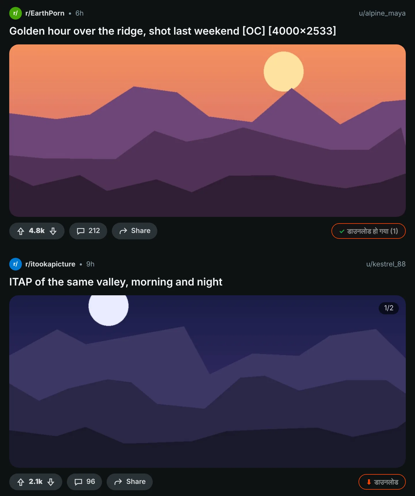
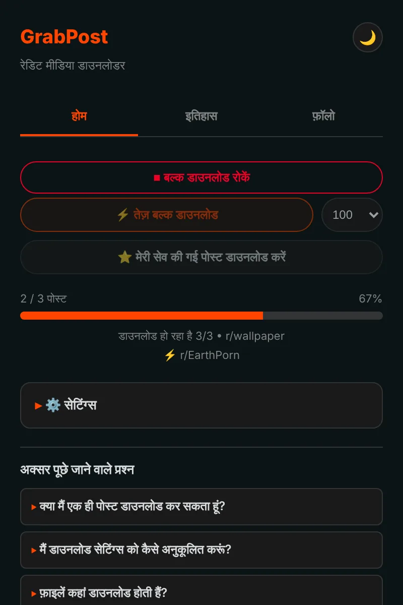
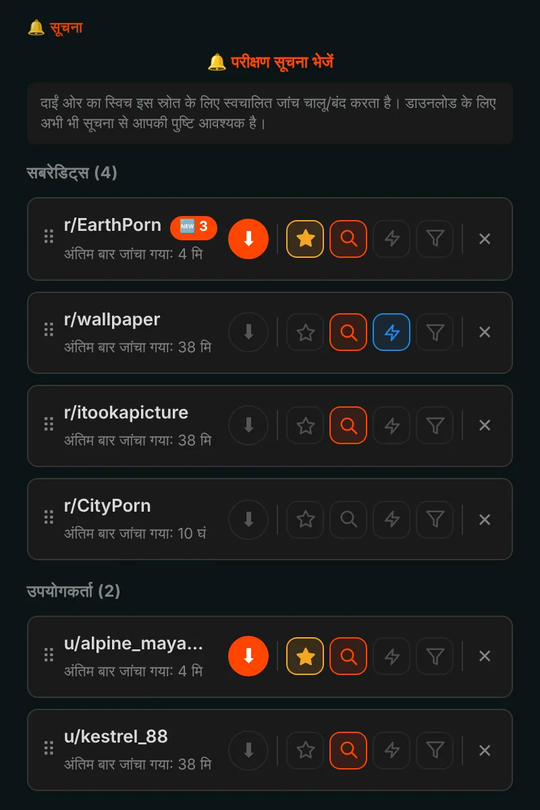
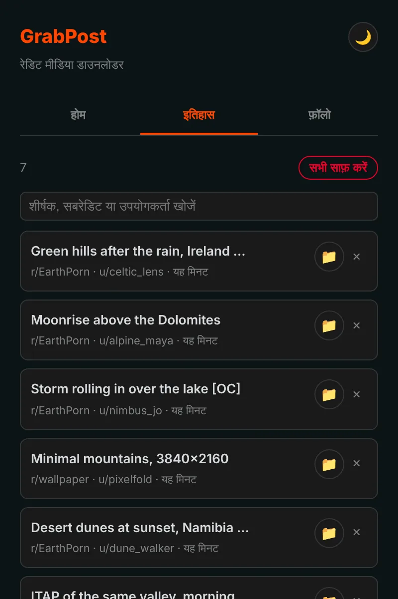

Reddit से कुछ भी एक क्लिक में सेव करें।
GrabPost हर Reddit पोस्ट पर एक डाउनलोड बटन जोड़ता है। वीडियो की आवाज़ बनी रहती है, गैलरी पूरी आती है, और जब आप कुछ और कर रहे होते हैं तब पूरे सबरेडिट या प्रोफ़ाइल डाउनलोड होते रहते हैं। मुफ़्त और बिना ट्रैकिंग।
अभी स्टोर में नहीं है। GitHub से इंस्टॉल करने में लगभग एक मिनट लगता है।

पोस्ट पर दिया बटन दबाएँ।
हर पोस्ट पर एक बटन
नारंगी बटन हर पोस्ट की वोट और शेयर वाली पंक्ति में होता है: फ़ीड, प्रोफ़ाइल और सर्च नतीजों में, नए और पुराने Reddit दोनों पर। इमेज, गैलरी, GIF, Redgifs और Imgur लिंक सब चलते हैं। Alt+Shift+D स्क्रीन के बीच वाली पोस्ट डाउनलोड करता है।

पूरे पेज एक साथ
फ़ास्ट मोड सबरेडिट, प्रोफ़ाइल, मल्टीरेडिट या सर्च को सीधे Reddit के डेटा से पढ़ता है, इसलिए स्क्रॉल करने की ज़रूरत नहीं। जो आपके पास पहले से है उसे छोड़ देता है और पहले डाउनलोड की गई पोस्ट पर पहुँचकर रुक जाता है। आपकी सेव की गई पोस्ट भी ऐसे ही डाउनलोड होती हैं।

फ़ॉलो करें, नई पोस्ट आप तक आएँगी
सबरेडिट और यूज़र को फ़ॉलो करें और नया मीडिया आने पर सूचना पाएँ, या उसे अपने आप डाउनलोड होने दें। मीडिया प्रकार, NSFW या कीवर्ड से फ़िल्टर करें। 10 तक पसंदीदा हर 5 मिनट में भी जाँचे जा सकते हैं।

हर डाउनलोड याद रहता है
इतिहास में आपकी सेव की हुई चीज़ें खोज बॉक्स के साथ दिखती हैं, और जो पोस्ट आपके पास हैं वे Reddit पर चिह्नित होती हैं। बैकअप अपने आप बनते हैं, इसलिए दोबारा इंस्टॉल करने से आपकी सूची नहीं मिटती।

बारीकियों का ध्यान रखा गया है
आवाज़ वाले वीडियो
Reddit आवाज़ को अलग फ़ाइल में रखता है। GrabPost उसे ढूँढकर आपके ब्राउज़र में ही जोड़ देता है।
आपके फ़ोल्डर, आपके फ़ाइल नाम
फ़ोल्डर के लिए {subreddit}/{user} और फ़ाइलों के लिए {date}_{title} जैसे टेम्पलेट।
कोई डुप्लिकेट नहीं
किसी ने वही तस्वीर दूसरे सबरेडिट में दोबारा डाली हो, तब भी पहचान लेता है।
IDM के साथ चलता है
डाउनलोड मैनेजर फ़ाइल को छीनकर आपके फ़ोल्डर नाम नहीं हटा सकते।
Reddit के साथ धैर्य
जब Reddit रुकने को कहता है, GrabPost ठीक उतनी देर रुकता है और फिर आगे बढ़ता है।
15 भाषाएँ
एक्सटेंशन और यह पेज आपकी भाषा बोलते हैं।
आप क्या डाउनलोड करते हैं, यह आपका मामला है
- कोई एनालिटिक्स नहीं, कोई ट्रैकिंग नहीं, कोई अकाउंट नहीं
- सिर्फ़ Reddit और उसका मीडिया रखने वाली साइटों से बात करता है
- आपका इतिहास और सेटिंग्स आपके ब्राउज़र में रहती हैं
- सोर्स कोड GitHub पर
एक मिनट में इंस्टॉल करें
GrabPost अभी Chrome वेब स्टोर में नहीं है, इसलिए इसे हाथ से इंस्टॉल किया जाता है। यह Chrome, Edge, Brave, Opera और दूसरे Chromium ब्राउज़र में चलता है।
- GitHub से नया grabpost-v…zip डाउनलोड करें और उसे ऐसे फ़ोल्डर में खोलें जिसे आप रखेंगे।
chrome://extensionsखोलें और ऊपर दाईं ओर डेवलपर मोड चालू करें।- अनपैक्ड लोड करें पर क्लिक करें और खोला गया grabpost फ़ोल्डर चुनें।
- Reddit खोलें। पोस्ट पर नारंगी बटन दिखेगा, और टूलबार आइकन GrabPost पैनल खोलता है।
अपडेट करने के लिए उसी फ़ोल्डर की फ़ाइलें बदलें और GrabPost कार्ड पर रीलोड बटन दबाएँ। आपकी सेटिंग्स और इतिहास बने रहते हैं।
Firefox: ऐड-ऑन स्टोर वाला संस्करण आने वाला है। तब तक Firefox zip को about:debugging से अस्थायी रूप से लोड किया जा सकता है।
सवाल
क्या GrabPost मुफ़्त है?
हाँ, हर सुविधा मुफ़्त है। अगर इससे आपका समय बचता है, तो आप डेवलपर को एक कॉफ़ी पिला सकते हैं।
फ़ाइलें कहाँ जाती हैं?
आपके ब्राउज़र के डाउनलोड फ़ोल्डर में, आपके चुने हुए सब-फ़ोल्डर के अंदर। डिफ़ॉल्ट Reddit Downloads है, और फ़ाइल नाम सबरेडिट के नाम से शुरू होते हैं।
क्या Reddit में लॉग इन होना ज़रूरी है?
सिर्फ़ आपकी सेव की गई पोस्ट और उम्र-प्रतिबंधित कम्युनिटी के लिए। बाकी सब बिना अकाउंट के चलता है।
दोबारा इंस्टॉल करने पर क्या मेरा इतिहास मिट जाएगा?
नहीं। ब्राउज़र सिंक चालू हो तो सेटिंग्स और फ़ॉलो सूची अपने आप लौट आती हैं। एक बैकअप फ़ाइल भी अपने आप सेव होती है, और GrabPost ब्राउज़र की डाउनलोड सूची से अपना इतिहास फिर से बना सकता है।
क्या यह Edge, Brave या Opera में चलता है?
हाँ। अनपैक्ड एक्सटेंशन लोड कर सकने वाला हर Chromium ब्राउज़र Chrome zip के साथ चलता है।
GrabPost डाउनलोड करें
अभी स्टोर में नहीं है। GitHub से इंस्टॉल करने में लगभग एक मिनट लगता है।